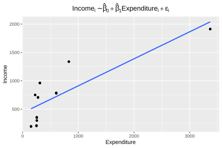
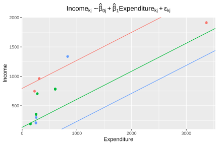
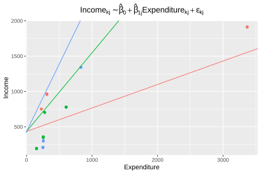
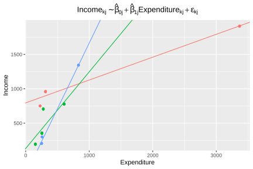

7.1 Motivation
To begin this chapter, tidyverse (Wickham, Averick, et al., 2026) is loaded for data manipulation and graph production, and lme4 (Bates et al., 2026) for multilevel model estimation. The database that will be used throughout the examples is imported. The mathematical titles of some figures are formatted with latex2exp (Meschiari, 2026), called explicitly in the code.
survey_data <- readRDS("Data/encuesta.rds") %>%
mutate(poverty = ifelse(Poverty != "NotPoor", 1, 0))For illustrative purposes, the examples in this section are developed from a subsample of the survey. The following code block builds the database used in the chapter examples. To do so, it identifies the three strata with the smallest number of households and retains only the variables required for the analysis: income, expenditure, stratum, sex, region, area of residence, and poverty status.
plot_data <- survey_data %>%
select(HHID, Stratum) %>%
distinct() %>%
group_by(Stratum) %>%
tally() %>%
arrange(n) %>%
select(-n) %>%
slice(1:3L) %>%
inner_join(survey_data, by = "Stratum") %>%
select(Income, Expenditure, Stratum, Sex, Region, Zone, poverty)As a starting point, a conventional linear regression model is fitted that relates household income to household expenditure, temporarily ignoring the hierarchical structure of the data. Under this specification, it is assumed that all observations are independent and that the relationship between income and expenditure is homogeneous for all households, regardless of the stratum to which they belong. Figure 7.1 presents the estimated regression line along with the observed data.
ggplot(data = plot_data,
aes(y = Income, x = Expenditure)) +
geom_jitter() +
geom_smooth(formula = y ~ x, method = "lm", se = FALSE) +
ggtitle(latex2exp::TeX(
"$Income_{i} \\sim \\hat{\\beta}_{0} + \\hat{\\beta}_{1}Expenditure_{i} + \\epsilon_{i}$"
)) +
theme(
legend.position = "none",
plot.title = element_text(hjust = 0.5)
)
Figure 7.1: Simple linear regression model for income as a function of expenditure (without considering strata)
While this model is useful as an initial reference, its assumptions are often unrealistic in the context of household surveys. In particular, independence between observations may be compromised when households belong to strata that share similar socioeconomic, demographic, or geographic characteristics. Likewise, it is possible that average income levels differ systematically between strata, even when the relationship between income and expenditure is similar. As Finch et al. (2019) point out, ignoring this hierarchical structure can lead to incorrect estimates of standard errors and, consequently, unreliable statistical inferences.
For illustrative purposes only, the hierarchical structure of the data is gradually incorporated into the modeling process. To do so, a model is initially fitted that allows each stratum to have its own intercept, while maintaining a common slope for all observations. This specification is useful for visualizing how average income levels may differ between strata, even when the relationship between income and expenditure is considered constant.
beta_1 <- coef(lm(Income ~ Expenditure, data = plot_data))[2]
model_coef <- plot_data %>%
group_by(Stratum) %>%
summarise(beta_0 = coef(lm(Income ~ Expenditure))[1]) %>%
mutate(beta_1 = beta_1)In this way, the model introduces a first source of heterogeneity between groups and makes it possible to appreciate the limitations of the simple regression model presented previously, which assumed a single regression line for the entire population. Figure 7.2 presents the regression lines with intercepts differentiated by stratum:
ggplot(data = plot_data,
aes(y = Income, x = Expenditure, colour = Stratum)) +
geom_jitter() +
geom_abline(data = model_coef,
mapping = aes(slope = beta_1, intercept = beta_0, colour = Stratum)) +
ggtitle(latex2exp::TeX(
"$Income_{kj} \\sim \\hat{\\beta}_{0j} + \\hat{\\beta}_{1}Expenditure_{kj} + \\epsilon_{kj}$"
)) +
theme(
legend.position = "none",
plot.title = element_text(hjust = 0.5)
)
Figure 7.2: Model with stratum-specific intercept and common slope
As a next step, an alternative specification is considered in which all strata share the same average level of income, represented by a common intercept, but the relationship between income and expenditure is allowed to vary between strata through slopes specific to each stratum.
beta_0 <- coef(lm(Income ~ Expenditure, data = plot_data))[1]
model_coef <- plot_data %>%
group_by(Stratum) %>%
summarise(beta_1 = coef(lm(Income ~ Expenditure))[2]) %>%
mutate(beta_0 = beta_0)Under this specification, the differences between strata are manifested in the intensity of the association between income and expenditure, rather than in their average levels. Figure 7.3 makes it possible to visualize these differences in the estimated regression trajectories for each stratum.
ggplot(data = plot_data,
aes(y = Income, x = Expenditure, colour = Stratum)) +
geom_jitter() +
geom_abline(data = model_coef,
mapping = aes(slope = beta_1, intercept = beta_0, colour = Stratum)) +
ggtitle(latex2exp::TeX(
"$Income_{kj} \\sim \\hat{\\beta}_{0} + \\hat{\\beta}_{1j}Expenditure_{kj} + \\epsilon_{kj}$"
)) +
theme(
legend.position = "none",
plot.title = element_text(hjust = 0.5)
)
Figure 7.3: Model with stratum-specific slope and common intercept
Finally, the most flexible specification of those presented so far is considered, allowing both the average level of income and the relationship between income and expenditure to vary between strata. Under this approach, each stratum has its own regression line, with intercepts and slopes estimated independently.
model_coef <- plot_data %>%
group_by(Stratum) %>%
summarise(
beta_0 = coef(lm(Income ~ Expenditure))[1],
beta_1 = coef(lm(Income ~ Expenditure))[2]
)This formulation makes it possible to capture simultaneously differences in income levels and in the strength of their association with expenditure. Figure 7.4 shows the fitted lines for each stratum under this specification.
ggplot(data = plot_data,
aes(y = Income, x = Expenditure, colour = Stratum)) +
geom_jitter() +
geom_abline(data = model_coef,
mapping = aes(slope = beta_1, intercept = beta_0, colour = Stratum)) +
ggtitle(latex2exp::TeX(
"$Income_{kj} \\sim \\hat{\\beta}_{0j} + \\hat{\\beta}_{1j}Expenditure_{kj} + \\epsilon_{kj}$"
)) +
theme(
legend.position = "none",
plot.title = element_text(hjust = 0.5)
)
Figure 7.4: Model with stratum-specific intercept and slope (independent fit)
Although this last specification offers a more flexible representation of the data and allows the particular features of each stratum to be captured, it presents an important limitation: the parameters are estimated completely independently for each group. As a consequence, it does not take advantage of information shared across strata that may exhibit similar patterns, which can generate unstable estimates, especially in those groups with a small number of observations.
Multilevel models overcome this difficulty through a mechanism known as shrinkage, in which specific estimates for each group are obtained by combining the group’s own information with information from the population as a whole. In this way, a balance is achieved between the representation of the differences between strata and the statistical efficiency of the estimates.